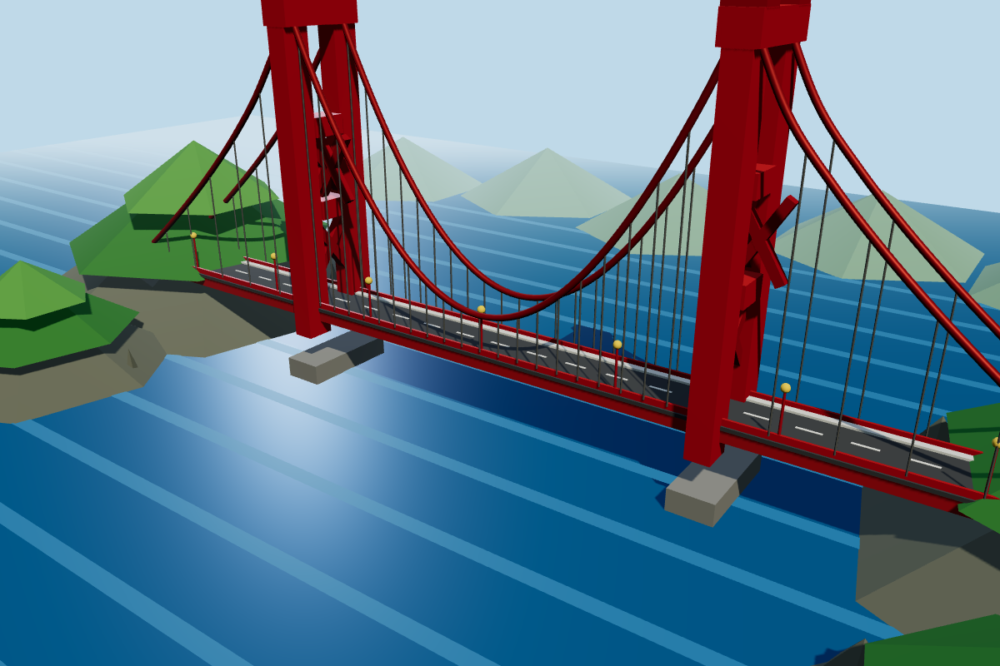
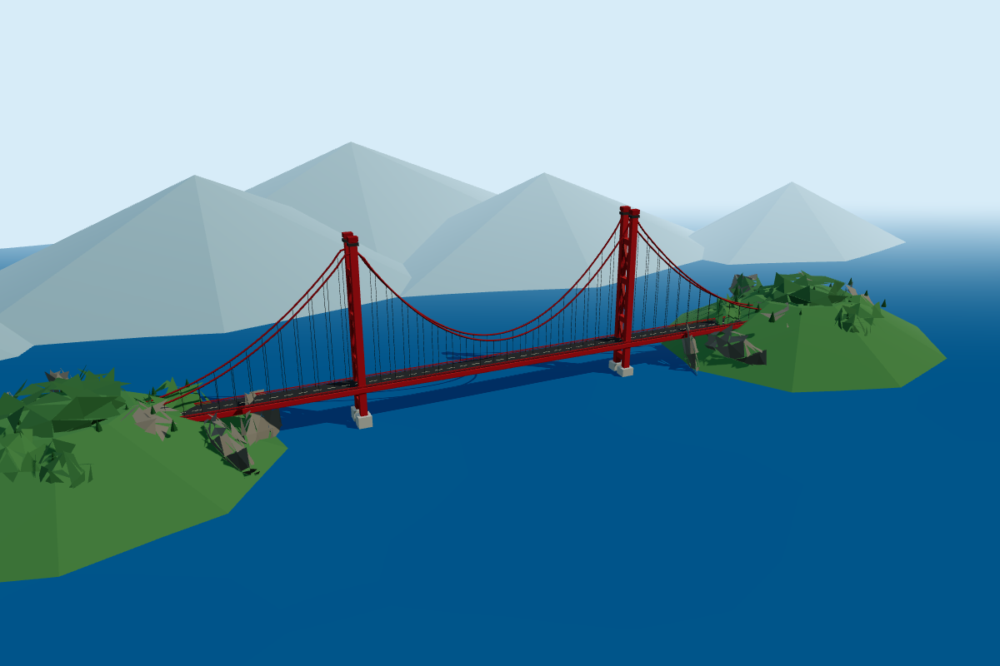
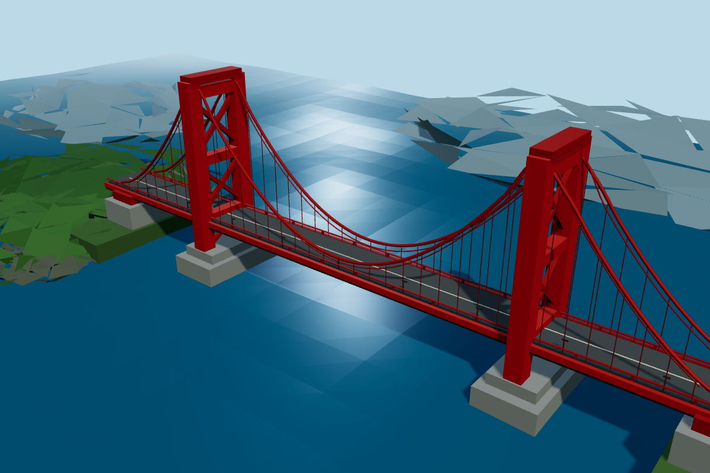
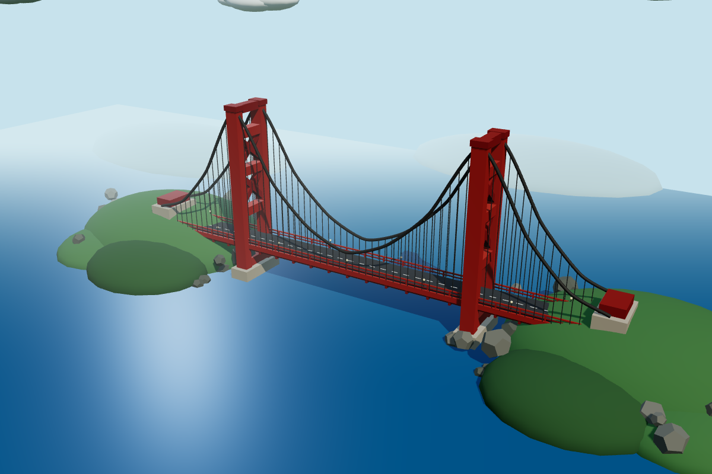
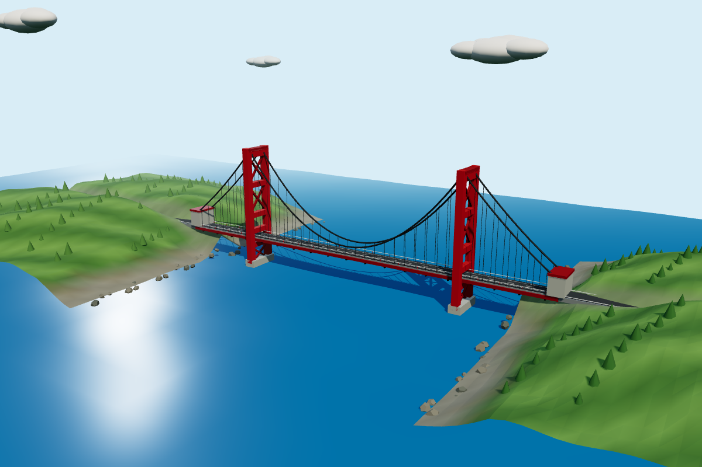
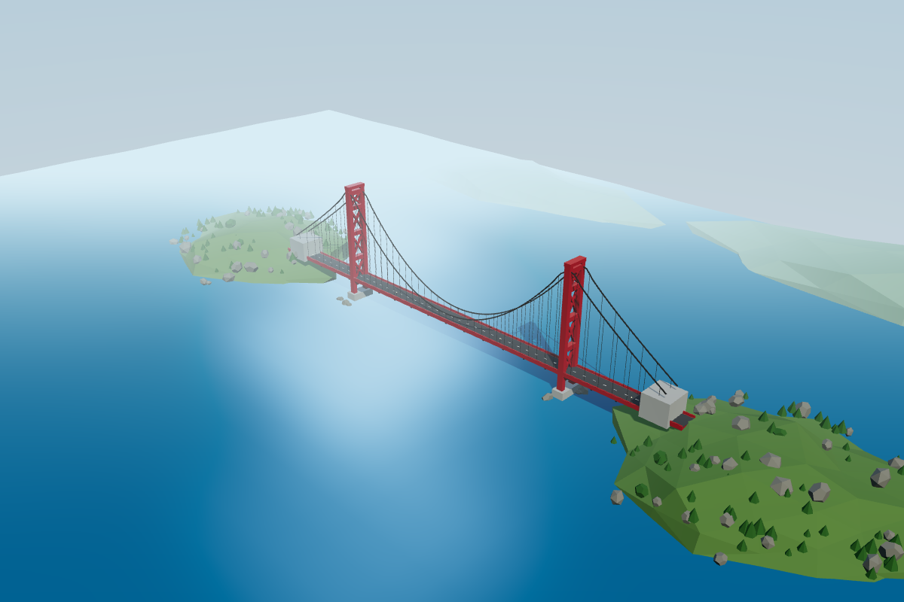

MINIMAL6.0/10 · 7.34s
Recognizable bridge and road detail, but both tower tops and the right approach are cropped.
San Francisco · Muse Ember · one original output per effort level

Recognizable bridge and road detail, but both tower tops and the right approach are cropped.

The whole span fits. Clear silhouette, though the bridge is small and the mountain backdrop is stylized.

Good structural detail and water, but the road and cable approach leave the right edge.

Complete span with balanced framing and readable tower structure. Landforms are simplified.

Complete and well-composed bridge, clear suspension structure and coherent shoreline detail.

Complete bridge and headlands, but the strong haze hides much of the far tower and span.